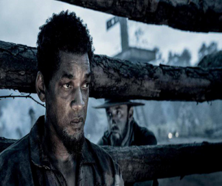

Resgate
O filme Resgate 2. O autor' Chris Hemsworth', interpretado Tyler Rake, terá uma missão de resgate mãe e filho no país gângster georgiano. Sua missão será de levá-los com segurança para Austrália, a segurança deles não será tão fácil assim.Porque o marido é um traficante. A missão de Tyler é tirar os dois do País, as facção ficará sabendo do resgate, vão mandar um Exército de mercenários.
Desenvolvimento
Em maio de 2020, foi relatado que Joe Russo havia sido contratado para escrever uma sequência do filme, com a intenção de Sam Hargrave e Chris Hemsworth retornarem. Em dezembro de 2020, os irmãos Russo afirmaram que, além da sequência, eles esperam desenvolver uma série de filmes ambientados no mundo de Extraction para não apenas explorar alguns dos personagens que foram apresentados no primeiro filme, mas também potencialmente lançar um universo cinematográfico. Em janeiro de 2021, houve rumores de que os irmãos Russo também estavam trabalhando em uma história de origem para o personagem de Randeep Hooda, Saju.
Sinopse
O Resgate 2. Será de muita ação, a sua hostória extra- oficial publicados pelo portal Giant Fraikin Robot.
O post assim diz que Rake se infiltará uma prisão resgater a esposa e o filho de um gângster georgiano. Seu objtivo é de levá-los para a Austrália em busca de segurança.
Filmando
As filmagens de sequência estavam programadas para começar em Sydner, Austrália, em setembro de 2021, mas medidas relacionados à pandemia de COVID-19 mudaram a produção para Praga. Em 29 de novembro de 2021, Hargrave anunciou que a fotografia principal havia começado em Praga, República Tcheca, antes de Hemsworth anunciar que começou a filmar seua cenas em 4 de dezembro. As filmagens posteriores começaram em Towers. As filmagens foram encerradas oficialmente em 6 de abril de 2022 e durou ate de fevereiro de 2022. O filme fou rodado nas câmeras ARRI ALEXA Mini LF implementando as mesmas estratégias de tomada longa de primeiro filmes.
Emancipação - Uma história de Liberdade.

Estrelado por Will Smith conhecido por suas cenas como (Um maluco no Pedaço), o filme Emancipation - Uma história de Liberdade, sua exibição nos cinemas, já teve muita boatos sobre o filme. Com participação de outros autores como William N. Collage (Êxodo: Deuses e Reis) na direção de Antoine Fuqua (Dia de Treinamento), o thriller tem cenas de ação também história real. Com duas horas de filme, as imagens gravadas com cores de preto e branco, um efeito das fotos antigas, deixa a imagem mais real possível.
Sinopse
Essa história foi narrada pela pessoa que sobreviveu a escravidão no Estados Unidos na cidade de Louisiana, sua sobrevivência teve que travessar pântanos onde ninguém tinha entrado antes, para escapar dos seu patrão. Porque ele era escravizado. O fato aconteceu com Peter, narrada pelo ator (Will Smith), seu objetivo era ter uma liberdade, ele tinha inteligência, e fé eterna, também um amor em sua família, tinha que fugir dos caçadores que fizeram ele de escravo, foi onde ele teve que arriscar sua vida para sobreviver atravessando pântanos da Lousiana.O filme que o autor Will Smith fez foi inspirado em uma imagem real de 1863, "Peter tirou uma foto aonde ele está com as costa marcadas de cicatrizes de tanto apanhar do seu patrão" (Whipped Peter), a foto foi tirada quando estava fazendo exame médico para entrar no Exército dos EUA. A imagem do acontecimento de Peter, teve uma repercussão enorme até foi capá de revista chamada Harpers Weekly. Emancipation é um futuro thriller de ação estadunidense dirigido por Antonie Fuqua, escrito por Willian N.Collage, estrelado por Will Smith. O conceito veio de Joey McFarland, que passou anos em pesquisa e desenvolvimento, antes de recrutar a estrela e cineasta.
Produção
Em 15 de junho de 2020, foi relatado que Antoine Fuqua iria dirigir Will Smith em Emancipation, baseado em um roteiro escrito por William N. Collage. Ao fazer o filme, Fuqua disse:
Já se passaram quase dois anos desde que li o roteiro pela primeira vez.Ele atingiu meu coração e minha alma de tantas maneiras que são impossíveis de transmitir, mas acho que você entende. Estamos observando alguns dos sentimentos que tive, no ruas agora. Há tristeza, há raiva, há amor, fé e esperança.Isso é importante ver, e a coisa mais esperançosa que estou vendo, é que eles não vão suportar mais.
Minha opnião sobre o Filme
Que filme mais triste e também emocionante. A história que o autor interpretou ficou top!. As cena do filme deixa a gente com uma pulga na orelha, e também os acontecimentos de cada situação que o autor interpreta, é muito interessante saber que no passado aconteceu de verdade esse episódio nos anos de 1844,os negros não tinha autônomia de querer viver uma vida digna com os povos brancos. Para viver em paz com os brancos, a solução que eles tinha era ir para um território onde as leis era justa.
Como assistir o filme de graça na APPLE TV?
Para sequir no instagram digite Will Smith, tem uma notícia o APPLE TV está oferecendo 2 meses de assitura gratuita ao público para coneferir Emancipation.
Não perca tempo a promoção vai até no dia 9 de Dezembro terminará 14 de janeiro, e além do filme, támbem irá ter acesso ao catálogo completo de filmes e séries originais da APPLE TV.
vamos ativar os dois meses gratuidos, basta click no link da bio do perfil oficial de Wil Smith no instagram, ou simplesmente Saiba mais! sobre nosso página de conteúdos..
O catálogo da APPLE TV+ ricos em conteúdos sua atualidade, recheado de séries frequentemente lembradas em grandes premiações com o EMMy. O usuário encontra na plataforma See, The Morning Show, Ruptura, Ted Lasso, entre outras produções de alta-qualidade.
Após os duas meses de gratuido, o usuário pode assinar o pacote no valor de R$14,90. Se não gosta da plataforme durante os duas meses gratuido, baste cancelar o acesso na plataforma. Com isso, nenhum valor é descontado do usuário.
CONFIRA Também:
Globoplay oferece Apple Tv+ de Graça:Melhores séries para aproveitar o Streaming da Apple